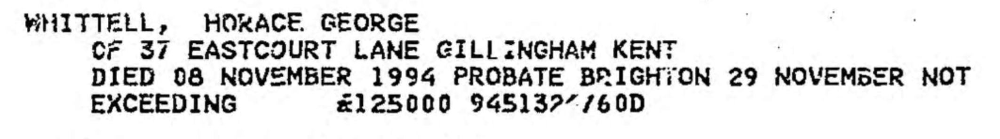

Horace George Whittell 1914 - 1994
[ Home ] | [ Calendar ] | [ Surnames Index ] | [ Family History ]A shipwright and the 2nd of 3 children of Sydney Whittell and Minnie Cowell (a dressmaker), Horace Whittell, the fourth cousin once-removed on the mother's side of <a href="I1.html">Nigel Horne</a>, was born in Medway, Kent, England on Oct 11, 1914<span class="citation">1,2</span>. He married Gladys Willey in Medway around Nov 1939<span class="citation">4</span>.</p><p>Throughout his life, he lived on 116 Victoria Road, Chatham, Kent, England on Sep 29, 1939<span class="citation">5</span>; and at 37 Eastcourt Lane, Gillingham, Kent on Aug 18, 1945 and in 1994. In 1945 he traveled from Port Said, Ash Sharqiyah, Egypt (on the ship "Empire Trooper") to Southampton, Hampshire, England, arriving on 18 Aug.<p>He died on Nov 8, 1994 in Chatham<span class="citation">2,3</span>.
Parents
- Sydney George was born on Sep 29, 1884
- Minnie Gertrude was born c. Nov 1886
Citations
- England & Wales births 1837-2006 - Findmypast
- England & Wales deaths 1837-2007 - Findmypast
- England & Wales Government Probate Death Index 1858-2019 - Findmypast
- England & Wales Marriages 1837-2005 - Findmypast
- 1939 Register - Findmypast (was recorded at this address)
Media
Horace Whittell - Probate

Horace Whittle - Arrival

England & Wales deaths 1837-2007 - BMD/D/1994/11/80526709
England & Wales births 1837-2006 - BMD/B/1914/4/AZ/001602/010
England & Wales Marriages 1837-2005 - BMD-M-1939-4-PZ-000629-071
1939 Register Transcription - TNA-R39-1691-1691C-010-23
England & Wales Government Probate Death Index 1858-2019 - GBOR/GOVPROBATE/C/1994-1994/00233030
Family Tree

Generated by Ged2Site. Last updated on Jul 20, 2025